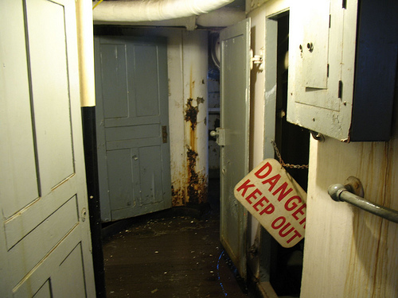

2008 Week 3 in Review
January 13 to January 19, 2008
Meetings about the Lightship Report
OTM Inc met with the Northwest Seaport Vice President again this week to discuss the review draft of the Preliminary Engineering Assessment we've prepared. The PEA is to be used as a guide on how best to spend about half a million dollars to rehabilitate the Lightship #83 as a museum vessel. Many parts of the ship are in poor condition, so this report is an important tool to guide the rehabilitation process for the next two years-and probably for decades. We identified replacing the deck as the most important part of the project, but OTM Inc recommends accomplishing quite a bit of preparation before the actual deck replacement. After enhancing the basic safety of the vessel, we strongly believe in the importance of restoring the ship's onboard systems: electrical, plumbing for heads and sinks, and a master fire- and flood-alarm.
This is important for three reasons. First, if these systems are functional, they will be used during the deck replacement and other rehabilitation projects. Replacing the deck and then repairing the systems would make the deck work much more time-consuming and expensive. Second, a usable system is much more likely to be maintained-and maintenance can be more important than repairs in the lifespan of a ship.
Third, and most importantly, repairing the systems starts to breathe life back into the ship. Right now, the Lightship is empty and dusty and rather grim; the Coast Guard stripped it down before decommissioning it and it's lay dockside since. While there have been many plans to use it as a museum, this is the organization's first success at attracting the significant funding needed to make the plans a reality. Turning the vessel into an engaging display for visitors requires much more than the funds, though; it takes excitement and enthusiasm that are very hard to create when the vessel feels dead:

This all sounds really sentimental (which is why I write it out here rather than in OTM Inc's official reports), but I think it's both possible and important. Spending the first part of the project to clean the boat, put fresh paint on the inside, and restore the systems-the first steps towards bringing it back to life-will generate the momentum needed to grab public attention, volunteers, and the additional financial support to carry the organization through the really hard job of replacing the deck.
We created the PEA recommendations to build on each other to bring the ship back to life. For example, cleaning the ship will allow the electrician to bring the lights and outlets back online, which will allow the plumbers and painters to see while painting and fixing the heads and sinks, which will give the shipwrights the necessary facilities and systems near right there, which will allow them to replace the deck efficiently.
This, of course, is hard to explain to a non-profit organization that needs to stretch every dollar as far as it can. Why spend money painting when the deck is leaking? Why not replace the deck and then, if there's funding left over paint the deck, and if not find volunteers who can do it? While these are valid concerns, we really believe in the importance of building that momentum and excitement to bring the ship back to life. This translates best through in-person meetings, so I'm sure that the VP and I will continue to meet to discuss the plans.
A Washington Estep in Hawaii
OTM Inc has been carrying on an interesting email exchange with the Waimea Sugar Mill Camp Museum on the island of Kauai, Hawaii this week. The museum has a Washington Iron Works engine in their collection of artifacts related to the sugar mill industry. It doesn't sound like they plan to restore or repair it at this time, but it's amazing that another group out there knows what a Washington Diesel is (there are only fifteen to twenty left in the world, you know). Maybe OTM Inc should take a "business trip" there during this chilly Seattle winter.